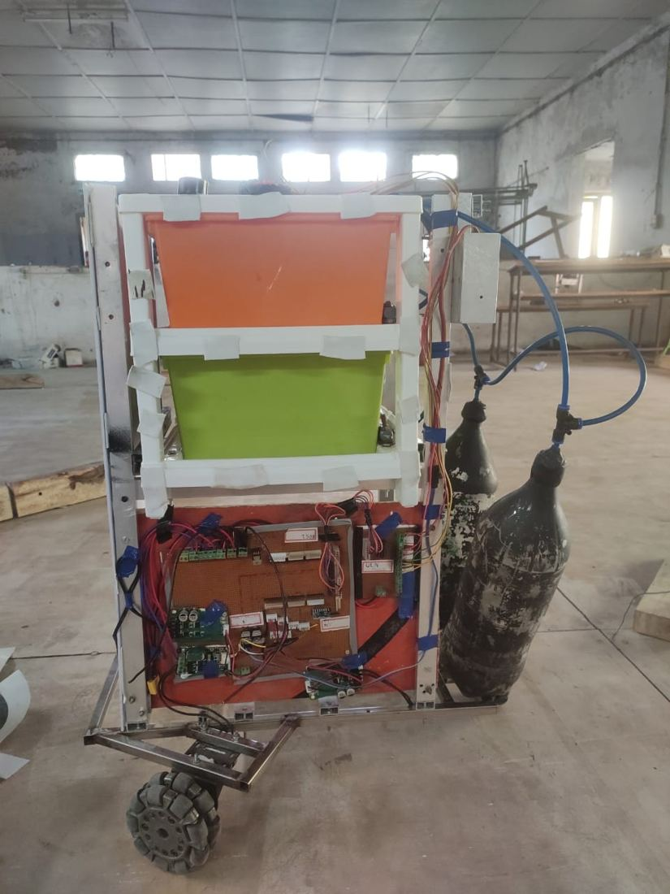

Umang Patel
Mechanical engineering MEng, University of Victoria — robotics, control, and hardware
- umang9196@gmail.com
- +1 236 514 4742
- Burnaby, British Columbia
- Portfolio as PDF
I finish a mechanical engineering master's at the University of Victoria in September 2026. Before that, a year designing hydraulic power systems at Bosch Rexroth India and a co-op at Trigon Pacific Terminals in Prince Rupert, investigating equipment failures on site at a bulk export terminal.
For each project below: what the goal was, what I did, and what actually came out of it. Where the work was a team effort or a result is still unsettled, I say so.
Full project reports, thesis chapters, and source available on request. Updated September 2026.


During COVID-19 there was an urgent need to reduce direct contact between healthcare workers and infected patients.
We set out to build a mobile robot that could disinfect surfaces and deliver medication, so routine ward tasks did not require someone walking into the room. I led the mechanical design: the omnidirectional base, the fluid system, and the CAD including structural validation in NX Nastran. My teammates covered the electronics and control software; I integrated the pumps with the microcontroller.
The robot had to move in confined ward spaces without room to turn, so I used a three-wheel holonomic drive and worked through the inverse kinematics for that configuration, sized the wheel diameter and motor requirements against the expected duty, and selected Al 6061 for the frame.

For sanitization I designed the circuit around a 12 V high-pressure diaphragm pump (8 LPM, 200 PSI cutoff) feeding flat fan nozzles, with a solenoid pressure control valve, flow control valve, flow meter, filter and gauge, so the spray could be adjusted rather than run flat out. This is the piece closest to my later work at Bosch Rexroth, and where I first had to size a fluid system rather than just specify parts.

The robot was designed, fabricated and demonstrated. It was a student prototype rather than a hospital-ready device, and the honest limitations were runtime and the robustness of the navigation. Most of the difficulty was not in any single subsystem but in packaging them together: the tank, the pump, the delivery rack and the drivetrain all competing for the same volume and the same centre of gravity.
Identify and classify items travelling on a conveyor by their material properties, then sort them into the correct bin.
The catch is that sensing happens well before the sorting point, so the system has to remember what each item was while it is still in transit. Three sensor stations read ferromagnetic properties and reflectivity; a stepper-driven bucket does the sorting; a DC conveyor motor runs under PWM; two push buttons handle pause and ramp-down.


Classification runs off interrupt-driven ADC sampling of the reflectance sensor. Classified items go into a linked list used as a FIFO queue, so the system tracks each item between the sensing point and the bins and fires the bucket at the right moment. The stepper runs an S-curve acceleration profile, which I added after ramping it linearly and finding it lost steps and never reached the speed I needed.

48 items sorted in 35 seconds, no errors.
Nearly all the debugging time went into the timing relationship between the electrical and software sides, not into either alone. Faults that presented as classification errors turned out to be queue and timing errors, and the only way to tell them apart was to instrument the firmware so it reported what it believed was happening. Building the measurement before trusting the result is a habit I have carried into everything since.
Motion plans for robot arms often route them through configurations where they lose the ability to move or apply force in some directions.
Keeping the arm in well-conditioned configurations while still respecting hard limits on joints, velocities, torques and obstacles is the difficult part, because the conditioning is a preference and the limits are not. I implemented a primal-dual augmented Lagrangian differential dynamic programming solver from first principles rather than calling an existing optimization library, applied to a 3-DOF planar arm and a 7-DOF Franka Panda.
Later versions reduce the KKT system with a Schur complement to deal with ill-conditioning. I added a variable timestep extension that refines the discretization where the arm is near singular, and separate branches implement ADMM-based obstacle avoidance and successive convexification.
Most of the work was diagnostic rather than derivational. I built the logging, plotting and comparison tooling used to evaluate solver versions across large batches of runs, because without it I could not tell whether a change in convergence came from the formulation, the numerics, or an implementation error. One example: a gravity compensation error that only appeared in specific joint configurations and was invisible in aggregate convergence statistics until the per-configuration breakdown existed.
The solver runs on both platforms and handles the constraint set. A comparison study across two manipulability indices and two enforcement strategies, hard constraint against soft penalty, is still converging, and the early indication that enforcement strategy matters more than index choice is not something I would defend yet.
Plan joint trajectories for a 2-DOF planar arm that track a target end-effector path, treating the arm's nonlinear dynamics as equality constraints rather than wishing them away.
I derived the manipulator dynamics from the Lagrangian, discretized them, and set the problem up as a constrained optimization minimizing a quadratic cost on states and inputs with torque limits. Then I implemented two solvers myself rather than calling a library: sequential quadratic programming, condensing the horizon into a single QP with the linearized dynamics as equality constraints, and differential dynamic programming with backward and forward passes, a line search, and a state-regularized variant. I benchmarked both against MATLAB's own fmincon SQP.


SQP tracked the target more accurately, particularly through fmincon, and handled the nonlinear constraints better. My DDP was faster per iteration but less accurate, and on the circle and square it visibly leaves the path. I would not present that as a general verdict on DDP: it says as much about my implementation and the constraint handling as it does about the methods.
This project is why my master's research went where it did. Writing both solvers by hand is what made the constrained case, and what to do when constraints and dynamics fight each other, the thing I wanted to work on next.
A one-tenth scale autonomous racing platform running a ROS2 stack on a Jetson, competing in the IEEE Victoria Section AI Velocity Cup.
I worked on sensor and actuator integration, wiring and vehicle bring-up, and controller tuning on the physical car. Most of my time went into the gap between the simulator and the vehicle: sensor noise and latency the simulation did not reproduce meant behaviour that passed in simulation failed on track. Closing that gap is what actually made the car competitive.


Our team won the Champion Award at the 2024 AI Velocity Cup, and also took the Technical Excellence Award and the Best Team Collaboration Award.
Odometry on these robots was only as good as the contact between the encoder wheel and the floor, and any slip put the position estimate out.
I designed a spring-loaded mount that keeps the encoder wheel preloaded against the surface through the pivot, so it maintains contact over uneven ground and does not slip. It is a small assembly, but it is the piece where the mechanical design directly determined whether the control worked.


Across three seasons I designed, fabricated and iterated competition machines to fixed deadlines with a multidisciplinary team. I was a team member rather than team lead.
Adaptive model predictive control with online system identification.
An MPC degrades as soon as the plant parameters it assumes drift. I put the dynamics in regressor form and ran recursive least squares at every timestep to identify parameters online, feeding the updated model back into the controller.
≈63% tracking improvement over a non-adaptive baseline, 0.92% final parameter error — in simulation, not on hardware.
Sustainable water heating for remote camp sites.
A two-person modelling and simulation project, work split evenly. We modelled a solar-pumped system that stores water as gravity head, runs it back through a turbine and generator, and heats a tank with an immersion heater, using elemental models, linear graphs and Government of Canada solar and temperature data for the site.
The modelling said the design does not work. The storage tank empties in under ten minutes, and at the power the turbine produces it would take about 32 hours to raise 28,000 litres by one degree. The individual subsystems behaved sensibly, the pump and motor sat in normal operating ranges, but the concept as a whole does not close. We reported that rather than tuning the write-up around it, and set out what we would do instead: heat the water directly from the panels and store far less of it.
Human-robot collaboration simulation, UR10e.
I built seven modular MATLAB and Simulink subsystem functions reproducing a published collaborative control scheme, and debugged the accompanying Python simulation, where the substantive fixes were a Procrustes SVD alignment issue and a null-space projector error. Reimplementing someone else's specification and finding where the implementation silently disagrees with it is the same activity as verifying that a system does what its documentation claims.
Tools
- CAD and analysis
- Siemens NX with NX Nastran, SolidWorks, AutoCAD, GD&T and tolerancing
- Simulation
- MATLAB and Simulink, CasADi, MuJoCo, Pinocchio, batch campaigns on Digital Research Alliance of Canada clusters
- Programming
- Python, MATLAB, C for AVR embedded targets, C++ at a developing level, Bash
- Robotics
- ROS2, NVIDIA Jetson, manipulator kinematics and dynamics, sensor and actuator integration
- Manufacturing
- MASTERCAM and CNC (Indo-German Tool Room certified), machining, welded and bolted fabrication, 3D printing
- Other
- Git, Linux, SAP, Engineer-in-Training eligible with EGBC